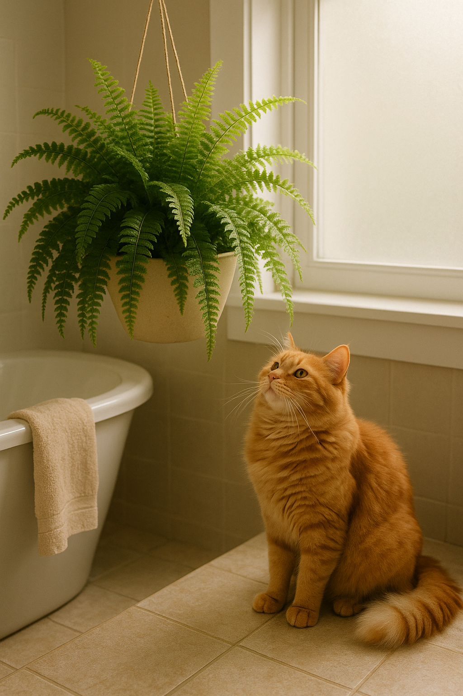

üåø Samambaias: seguras, lindas e negligenciadas
As samambaias já foram as queridinhas dos interiores brasileiros, penduradas em varandas e preenchendo os espaços com leveza e frescor. Mas com o tempo, foram sendo deixadas de lado — talvez por parecerem “comuns demais” ou exigirem atenção com a rega. Chegou a hora de reabilitar essa clássica: linda, segura e cheia de charme.
Ao contrário de muitas plantas ornamentais, a samambaia é totalmente segura para gatos. Ou seja, você pode cultivá-la com tranquilidade, mesmo em locais acessíveis para os felinos. Isso a torna uma das melhores opções para decorar com verde e paz de espírito.
Além da segurança, ela oferece vantagens estéticas e ambientais: ajuda na umidificação do ar, cria texturas interessantes na composição de interiores, e funciona bem como planta pendente, evitando que seja pisoteada ou mexida pelos bichanos.
Prefere sombra parcial, ambiente úmido e solo constantemente levemente úmido — sem encharcamento. Varandas cobertas, banheiros iluminados e salas bem ventiladas são o habitat ideal.
Se você quer uma planta com presença, movimento e que combine com seu lar e seu pet, traga uma samambaia de volta para casa. Aposte em suportes suspensos, vasos de parede ou até cachepôs de chão. E depois, é só observar seu felino cochilando tranquilamente ao lado dela. Pura harmonia verde.
← Voltar para o blog